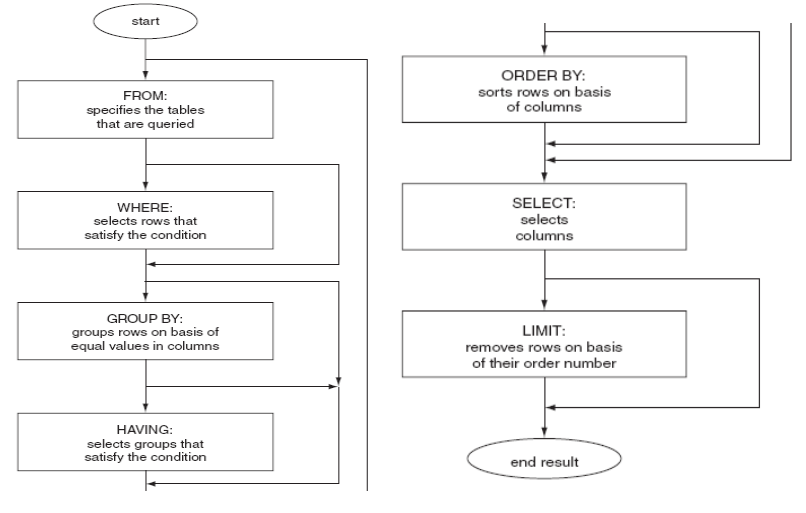
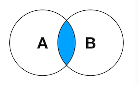
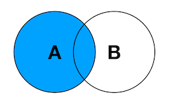
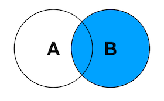

一、SQL语言简介：
结构化查询语言(Structured Query Language)简称SQL，是一种特殊目的的编程语言，是一种数据库
查询和程序设计语言，用于存取数据以及查询、更新和管理关系数据库系统；同时也是数据库脚本文件
的扩展名
关系型数据库的常见组件
数据库：database
表：table
行：row
列：column
索引：index
视图：view
用户：user
权限：privilege
存储过程：procedure，无返回值
存储函数：function，有返回值
触发器：trigger
事件调度器：event scheduler，任务计划
命名规则：
必须以字母开头
可包括数字和三个特殊字符（# _ $）
不要使用MySQL的保留字
同一database(Schema)下的对象不能同名
数据类型：
(一)整型
tinyint(m) 1个字节 范围(-128~127)
smallint(m) 2个字节 范围(-32768~32767)
mediumint(m) 3个字节 范围(-8388608~8388607)
int(m) 4个字节 范围(-2147483648~2147483647)
bigint(m) 8个字节 范围(+-9.22*10的18次方)
取值范围如果加了unsigned，则最大值翻倍，如tinyint unsigned的取值范围为(0~255)
(二)浮点型(float和double)，近似值
float(m,d) 单精度浮点型 8位精度(4字节) m总个数，d小数位
double(m,d) 双精度浮点型16位精度(8字节) m总个数，d小数位
设一个字段定义为float(6,3)，如果插入一个数123.45678,实际数据库里存
的是123.457，但总个数还以实际为准，即6位
(三)字符串(char,varchar,_text)
char(n) 固定长度，最多255个字符
varchar(n)可变长度，最多65535个字符
inytext 可变长度，最多255个字符
ext 可变长度，最多65535个字符
mediumtext 可变长度，最多2的24次方-1个字符
ongtext 可变长度，最多2的32次方-1个字符
BINARY(M) 固定长度，可存二进制或字符，长度为0-M字节
VARBINARY(M) 可变长度，可存二进制或字符，允许长度为0-M字节
内建类型：ENUM枚举, SET集合
char和varchar：
1.char(n) 若存入字符数小于n，则以空格补于其后，查询之时再将空格去掉。
所以char类型存储的字符串末尾不能有空格，varchar不限于此。
2.char(n) 固定长度，char(4)不管是存入几个字符，都将占用4个字节，varchar
是存入的实际字符数+1个字节（n< n>255)，所以varchar(4),存入3个字符将
占用4个字节。
3.char类型的字符串检索速度要比varchar类型的快
varchar和text：
1.varchar可指定n，text不能指定，内部存储varchar是存入的实际字符数+1个
字节（n< n>255)，text是实际字符数+2个字节。
2.text类型不能有默认值
3.varchar可直接创建索引，text创建索引要指定前多少个字符。varchar查询速
度快于text
(四)二进制数据：BLOB
BLOB和text存储方式不同，TEXT以文本方式存储，英文存储区分大小写，
而Blob是以二进制方式存储，不分大小写
BLOB存储的数据只能整体读出
TEXT可以指定字符集，BLOB不用指定字符集
(五)日期时间类型
date 日期 ‘2008-12-2’
time 时间 ’12:25:36′
datetime 日期时间 ‘2008-12-2 22:06:44’
timestamp 自动存储记录修改时间
YEAR(2), YEAR(4)：年份
timestamp字段里的时间数据会随其他字段修改的时候自动刷新，这个数据类
型的字段可以存放这条记录最后被修改的时间
修饰符：
NULL 数据列可包含NULL值
NOT NULL 数据列不允许包含NULL值
DEFAULT 默认值
PRIMARY KEY 主键
UNIQUE KEY 唯一键
CHARACTER SET name 指定一个字符集
AUTO_INCREMENT 自动递增，适用于整数类型
UNSIGNED 无符号
SQL语句分类：
DDL：Data Defination Language
代表操作：
CREATE 可用来创建数据库，表
DROP 可用来删除数据库，表
ALTER 可用来修改表的属性，字段的结构
DML：Data Manipulation Language
代表操作：
INSERT 可用来添加表中的行
DELETE 可用来删除表中的行
UPDATE 可用来修改标准行的信息
DCL：Data Control Language
代表操作：
GRANT
REVOKE
DQL：Data Query Language
代表操作：
SELECT
二、数据定义语言(DDL)：CREATE, DROP, ALTER
数据定义语言(DDL)：其语句包括动词CREATE和DROP。在数据库中创建新表或删除表（CREAT
TABLE 或 DROP TABLE）；为表加入索引等。DDL包括许多与人数据库目录中获得数据
有关的保留字。它也是动作查询的一部分。
新建数据库：
CREATE DATABASE|SCHEMA [IF NOT EXISTS] DB_NAME;
CHARACTER SET ‘character set name’
COLLATE ‘collate name’
删除数据库：
DROP DATABASE|SCHEMA [IF EXISTS]’DB_NAME’
新建表：
CREATE TABLE
(1) 直接创建
(2) 通过查询现存表创建；新表会被直接插入查询而来的数据
CREATE [TEMPORARY] TABLE [IF NOT EXISTS] tbl_name
[(create_definition,…)] [table_options]
[partition_options] select_statement
(3) 通过复制现存的表的表结构创建，但不复制数据
CREATE [TEMPORARY] TABLE [IF NOT EXISTS] tbl_name { LIKE
oldtblname | (LIKE oldtblname) }
示例：直接创建表
MariaDB [(db1)]> create table emp
-> ( id int unsigned primary key auto_increment,
-> name varchar(30) not null ,
-> sex char(1) default ‘m’ ,
-> address varchar(100) ) engine=innodb charset=utf8;
示例：通过查询现存表创建
MariaDB [db1]> create table user select user,host,password from mysql.user;
MariaDB [db1]> desc user;
+———-+———-+——+—–+———+——-+
| Field | Type | Null | Key | Default | Extra |
+———-+———-+——+—–+———+——-+
| user | char(16) | NO | | | |
| host | char(60) | NO | | | |
| password | char(41) | NO | | | |
+———-+———-+——+—–+———+——-+
MariaDB [db1]> select * from user;
+——+—————+———-+
| user | host | password |
+——+—————+———-+
| root | localhost | |
| root | centos7.wangx | |
| root | 127.0.0.1 | |
| root | ::1 | |
| | localhost | |
| | centos7.wangx | |
+——+—————+———-+
示例：通过复制现存的表的表结构创建，但不复制数据
MariaDB [db1]> create table user3 like mysql.user;
示例：创建表包含复合主键
MariaDB [db1]> create table t1 ( name char(30),city char(30),sex char(1) primary key(name,city) );
表操作：
查看所有的引擎：SHOW ENGINES
查看表：SHOW TABLES [FROM db_name]
查看表结构：DESC [db_name.]tb_name
删除表：DROP TABLE [IF EXISTS] tb_name
查看表创建命令：SHOW CREATE TABLE tbl_name
查看表状态：SHOW TABLE STATUS LIKE ‘tbl_name’
查看库中所有表状态：SHOW TABLE STATUS FROM db_name
示例：直接创建TABLE
MariaDB [db1]> CREATE TABLE students ( id tinyint unsigned not null primary key,
name char(10) not null,phone char(11) not null ,sex char(1) );
MariaDB [db1]> show tables;
+—————+
| Tables_in_db1 |
+—————+
| students |
+—————+
示例：查看表状态信息
MariaDB [db1]> show table status like ‘students’\G
*** 1. row ***
Name: students
Engine: InnoDB
Version: 10
Row_format: Compact
Rows: 0
Avg_row_length: 0
Data_length: 16384
Max_data_length: 0
Index_length: 0
Data_free: 10485760
Auto_increment: NULL
Create_time: 2018-06-06 18:19:05
Update_time: NULL
Check_time: NULL
Collation: latin1_swedish_ci
Checksum: NULL
Create_options:
Comment:
1 row in set (0.00 sec)
示例：查看数据库状态信息
MariaDB [db1]> show table status from db1\G
*** 1. row ***
Name: students
Engine: InnoDB
Version: 10
Row_format: Compact
Rows: 0
Avg_row_length: 0
Data_length: 16384
Max_data_length: 0
Index_length: 0
Data_free: 10485760
Auto_increment: NULL
Create_time: 2018-06-06 18:19:05
Update_time: NULL
Check_time: NULL
Collation: latin1_swedish_ci
Checksum: NULL
Create_options:
Comment:
1 row in set (0.00 sec)
表操作
DROP TABLE [IF EXISTS] ‘tbl_name’;
ALTER TABLE ‘tbl_name’
字段：
添加字段：add
ADD col1 data_type [FIRST|AFTER col_name]
删除字段：drop
修改字段：
alter（默认值）, change（字段名）, modify（字段属性）
索引:
添加索引：add index
删除索引: drop index
表选项
修改:
查看表上的索引：SHOW INDEXES FROM [db_name.]tbl_name;
查看帮助：Help ALTER TABLE
示例：
修改表名
ALTER TABLE students RENAME s1;
添加表s1中phone列到name列后
ALTER TABLE s1 ADD phone varchar(11) AFTER name;
修改表s1中的phone字段属性为int
ALTER TABLE s1 MODIFY phone int;
修改表s1中的phone字段名称为mobile
ALTER TABLE s1 CHANGE COLUMN phone mobile char(11);
删掉表s1中的一个字段mobile
ALTER TABLE s1 DROP COLUMN mobile;
在students表中新增加一列gender，只允许填入m，f
ALTER TABLE students ADD gender ENUM(‘m’,’f’)
修改students表中的id字符变为sid字段
ALETR TABLE students CHANGE id sid int UNSIGNED NOT NULL PRIMARY KEY;
将students表中name字段设为唯一键
ALTER TABLE students ADD UNIQUE KEY(name);
将students表中age字段设为索引
ALTER TABLE students ADD INDEX(age);
DESC students;
SHOW INDEXES FROM students;
删掉students表中的age字段
ALTER TABLE students DROP age;
三、数据操作语言(DML)：INSERT,UPDATE,DELETE
数据操作语言(DML)：其语句包括动词INSERT，UPDATE和DELETE。它们分别用于添加，修
改和删除表中的行。也称为动作查询语言。
INSERT
功能：可用来添加表中的行
示例：添加表中的行第一种语法
MariaDB [db1]> insert students values(1,’bai’,’10086′,’m’);
MariaDB [db1]> select * from students;
+—-+——+——-+——+
| id | name | phone | sex |
+—-+——+——-+——+
| 1 | bai | 10086 | m |
+—-+——+——-+——+
示例：添加表中的行第二种语法
MariaDB [db1]> insert students(name,id) value (‘wangx’,70);
MariaDB [db1]> select * from students;
+—-+——+——-+——+
| id | name | phone | sex |
+—-+——+——-+——+
| 1 | bai | 10086 | m |
| 70 | wangx| | NULL |
+—-+——+——-+——+
多行添加
MariaDB [db1]> insert students(id,name,sex) values (2,’liu’,’m’),(3,’lin’,’f’);
MariaDB [db1]> select * from students;
+—-+——+——-+——+
| id | name | phone | sex |
+—-+——+——-+——+
| 1 | bai | 10086 | m |
| 2 | liu | | m |
| 3 | lin | | f |
| 70 | wang | | NULL |
+—-+——+——-+——+
示例：添加表中的行第三种语法
MariaDB [db1]> insert students set id=4,name=’zhao’ ;
MariaDB [db1]> select * from students;
+—-+——+——-+——+
| id | name | phone | sex |
+—-+——+——-+——+
| 1 | bai | 10086 | m |
| 2 | liu | | m |
| 3 | lin | | f |
| 4 | zhao | | NULL |
| 70 | wang | | NULL |
+—-+——+——-+——+
UPDATE
功能：可用来修改标准行的信息
UPDATE [LOW_PRIORITY] [IGNORE] table_reference
SET col_name1={expr1|DEFAULT} [, col_name2={expr2|DEFAULT}] …
[WHERE where_condition]
[ORDER BY …]
[LIMIT row_count]
注意：一定要有限制条件，否则将修改所有行的指定字段
限制条件：
WHERE
LIMIT
Mysql 选项：–safe-updates| –i-am-a-dummy|-U
MariaDB [db1]> select * from students;
+—-+——+——-+——+
| id | name | phone | sex |
+—-+——+——-+——+
| 1 | bai | 10086 | m |
| 2 | liu | | m |
| 3 | lin | | f |
| 4 | zhao | | NULL |
| 70 | wang | | NULL |
+—-+——+——-+——+
示例：修改表中行内容
MariaDB [db1]> update students set name=’admin’,sex=’f’ where id=1;
MariaDB [db1]> select * from students;
+—-+——-+——-+——+
| id | name | phone | sex |
+—-+——-+——-+——+
| 1 | admin | 10086 | f |
| 2 | liu | | m |
| 3 | lin | | f |
| 4 | zhao | | NULL |
| 70 | wang | | NULL |
+—-+——-+——-+——+
DELETE
功能：可用来删除表中的行
生产环境一般用伪删除代替DELETE：
DELETE [LOW_PRIORITY] [QUICK] [IGNORE] FROM tbl_name
[WHERE where_condition]
[ORDER BY …]
[LIMIT row_count]
可先排序再指定删除的行数
注意：一定要有限制条件，否则将清空表中的所有数据
限制条件：
WHERE
LIMIT
TRUNCATE TABLE tbl_name; 清空表，慎用！
MariaDB [db1]> delete from students where id=1;
MariaDB [db1]> select * from students;
+—-+——+——-+——+
| id | name | phone | sex |
+—-+——+——-+——+
| 2 | liu | | m |
| 3 | lin | | f |
| 4 | zhao | | NULL |
| 70 | wang | | NULL |
+—-+——+——-+——+
为避免操作时忘加where可使用安全更新模式
mysql –safe-updates|-U
当执行修该操作未指定WHERE时就会进行报错提醒
MariaDB [db1]> update user set user=’admin’
-> ;
ERROR 1175 (HY000): You are using safe update mode and you tried to update a table without a WHERE that uses a KEY column
方法一：添加别名
alias mysql=mysql -U
方法二：修改配置文件
vim /etc/my.cnf.d/mysql-clients.cnf
[mysql]
safe-updates
四、数据查询语言(DQL)：SELECT,LIKE,GROUP,ODER BY
数据查询语言(DQL)：也称为“数据检索语句”，用以从表中获得数据，确定数据怎样在
应用程序给出。保留字SELECT是DQL（也是所有SQL）用得最多的动词，其他DQL常用的保
留字有WHERE，ORDER BY，GROUP BY和HAVING。这些DQL保留字常与其他类型的SQL语句一
起使用。
select语句执行顺序：

SELECT
[ALL | DISTINCT | DISTINCTROW ]
[SQL_CACHE | SQL_NO_CACHE]
select_expr [, select_expr …]
[FROM table_references
[WHERE where_condition]
[GROUP BY {col_name | expr | position}
[ASC | DESC], … [WITH ROLLUP]]
[HAVING where_condition]
[ORDER BY {col_name | expr | position}
[ASC | DESC], …]
[LIMIT {[offset,] row_count | row_count OFFSET offset}]
[FOR UPDATE | LOCK IN SHARE MODE]
注意：select语句用法不同会造成性能消耗不同，性能差的写法甚至可能造成宕机
LIKE:
%: 任意长度的任意字符
_：任意单个字符
RLIKE：正则表达式，索引失效，不建议使用
REGEXP：匹配字符串可用正则表达式书写模式，同上
逻辑操作符：
NOT
AND
OR
XOR
示例：
单表操作
MariaDB [db1]> select * from user;
+——+—————+———-+
| user | host | password |
+——+—————+———-+
| root | localhost | |
| root | centos7.wangx | |
| root | 127.0.0.1 | |
| root | ::1 | |
| | localhost | |
| | centos7.wangx | |
+——+—————+———-+
select也是一种语句：
MariaDB [db1]> select ‘hello world’;
+————-+
| hello world |
+————-+
| hello world |
+————-+
也可以进行运算
MariaDB [db1]> select ‘1+2=’,1+2;
+——+—–+
| 1+2= | 1+2 |
+——+—–+
| 1+2= | 3 |
+——+—–+
有类似与sed的特性：
MariaDB [db1]> select ‘1+2=’,1+2 from user;
+——+—–+
| 1+2= | 1+2 |
+——+—–+
| 1+2= | 3 |
| 1+2= | 3 |
| 1+2= | 3 |
| 1+2= | 3 |
| 1+2= | 3 |
| 1+2= | 3 |
+——+—–+
MariaDB [db1]> select user,password from user;
+——+———-+
| user | password |
+——+———-+
| root | |
| root | |
| root | |
| root | |
| | |
| | |
+——+———-+
可添加自定义字符：
MariaDB [db1]> select ‘number’,user,password from user;
+——–+——+———-+
| number | user | password |
+——–+——+———-+
| number | root | |
| number | root | |
| number | root | |
| number | root | |
| number | | |
| number | | |
+——–+——+———-+
限定条件select
MariaDB [db1]> select ‘number’,user,password from user where user=’root’;
+——–+——+———-+
| number | user | password |
+——–+——+———-+
| number | root | |
| number | root | |
| number | root | |
| number | root | |
+——–+——+———-+
MariaDB [db1]> select * from students;
+—-+——+——-+——+
| id | name | phone | sex |
+—-+——+——-+——+
| 2 | liu | | m |
| 3 | lin | | f |
| 4 | zhao | | NULL |
| 70 | wang | | NULL |
+—-+——+——-+——+
判断条件，是否为空
搜索性别为空的学生信息
MariaDB [db1]> select * from students where sex is null;
+—-+——+——-+——+
| id | name | phone | sex |
+—-+——+——-+——+
| 4 | zhao | | NULL |
| 70 | wang | | NULL |
+—-+——+——-+——+
搜索性别不为空的学生信息
MariaDB [db1]> select * from students where sex is not null;
+—-+——+——-+——+
| id | name | phone | sex |
+—-+——+——-+——+
| 2 | liu | | m |
| 3 | lin | | f |
+—-+——+——-+——+
搜索id大于2小于5的学生信息
MariaDB [db1]> select * from students where id >=2 and id<=5;
+—-+——+——-+——+
| id | name | phone | sex |
+—-+——+——-+——+
| 2 | liu | | m |
| 3 | lin | | f |
| 4 | zhao | | NULL |
+—-+——+——-+——+
也可用between写法表示范围
MariaDB [db1]> select * from students where id between 2 and 5;
+—-+——+——-+——+
| id | name | phone | sex |
+—-+——+——-+——+
| 2 | liu | | m |
| 3 | lin | | f |
| 4 | zhao | | NULL |
+—-+——+——-+——+
字符范围搜索
MariaDB [db1]> select * from students where sex in (‘f’,’m’);
+—-+——+——-+——+
| id | name | phone | sex |
+—-+——+——-+——+
| 2 | liu | | m |
| 3 | lin | | f |
+—-+——+——-+——+
逻辑或关系搜索
MariaDB [db1]> select * from students where sex in (‘f’,’m’) or sex is null;
+—-+——+——-+——+
| id | name | phone | sex |
+—-+——+——-+——+
| 0 | 70 | | NULL |
| 2 | liu | | m |
| 3 | lin | | f |
| 4 | zhao | | NULL |
| 70 | wang | | NULL |
+—-+——+——-+——+
可对字段定义别名（as可省略）
MariaDB [db1]> select id as 编号,name 姓名 from students where sex in (‘f’,’m’) or sex is null;
+——–+——–+
| 编号 | 姓名 |
+——–+——–+
| 0 | 70 |
| 2 | liu |
| 3 | lin |
| 4 | zhao |
| 70 | wang |
+——–+——–+
LIKE
功能：支持模糊搜索
搜索名字以w开头学生信息
MariaDB [db1]> select * from students where name like ‘w%’;
+—-+——+——-+——+
| id | name | phone | sex |
+—-+——+——-+——+
| 70 | wang | | NULL |
+—-+——+——-+——+
搜索名字包含i的学生信息
MariaDB [db1]> select * from students where name like ‘%i%’;
+—-+——+——-+——+
| id | name | phone | sex |
+—-+——+——-+——+
| 2 | liu | | m |
| 3 | lin | | f |
+—-+——+——-+——+
“_”可用来表示单个字符，搜索名字为三个字符的学生信息
MariaDB [db1]> select * from students where name like ‘___’;
+—-+——+——-+——+
| id | name | phone | sex |
+—-+——+——-+——+
| 2 | liu | | m |
| 3 | lin | | f |
+—-+——+——-+——+
RLIKE
功能：支持正则表达式，不建议使用，将导致索引生效！！！！！
搜索名字以l开头的学员信息
MariaDB [db1]> select * from students where name rlike ‘^l’;
+—-+——+——-+——+
| id | name | phone | sex |
+—-+——+——-+——+
| 2 | liu | | m |
| 3 | lin | | f |
+—-+——+——-+——+
GROUP
功能：根据指定的条件把查询结果进行“分组”以用于做“聚合”运算
avg(), max(), min(), count(), sum()
HAVING: 对分组聚合运算后的结果指定过滤条件
ORDER BY: 根据指定的字段对查询结果进行排序
升序：ASC
降序：DESC
LIMIT [[offset,]row_count]：对查询的结果进行输出行数数量限制
对查询结果中的数据请求施加“锁”
FOR UPDATE: 写锁，独占或排它锁，只有一个读和写
LOCK IN SHARE MODE: 读锁，共享锁，同时多个读
以下表为示例
MariaDB [db1]> select * from students;
+—-+——-+——-+——-+——+
| id | name | phone | score | sex |
+—-+——-+——-+——-+——+
| 2 | liu | | 88 | m |
| 3 | lin | | 84 | f |
| 6 | zhang | 10010 | 76 | m |
| 70 | wang | | 93 | f |
+—-+——-+——-+——-+——+
按性别分组统计最好成绩
MariaDB [db1]> select sex,max(score) as 最好成绩 from students group by sex;
+——+————–+
| sex | 最好成绩 |
+——+————–+
| f | 93 |
| m | 88 |
+——+————–+
按性别分组统计平均成绩
MariaDB [db1]> select sex,avg(score) from students group by sex;
+——+————+
| sex | avg(score) |
+——+————+
| f | 88.5000 |
| m | 82.0000 |
+——+————+
多行分组：
MariaDB [db1]> select * from students;
+—-+——-+——-+——-+——+——-+
| id | name | phone | score | sex | class |
+—-+——-+——-+——-+——+——-+
| 2 | liu | | 88 | m | 1 |
| 3 | lin | | 84 | f | 1 |
| 4 | abc | 11000 | 86 | f | 1 |
| 6 | zhang | 10010 | 76 | m | 2 |
| 70 | wang | | 93 | f | 2 |
+—-+——-+——-+——-+——+——-+
统计按班级，性别分组后的各组平均成绩
MariaDB [db1]> select class,sex,avg(score) from students group by class,sex;
+——-+——+————+
| class | sex | avg(score) |
+——-+——+————+
| 1 | f | 85.0000 |
| 1 | m | 88.0000 |
| 2 | f | 93.0000 |
| 2 | m | 76.0000 |
+——-+——+————+
count()统计数量：
MariaDB [db1]> select class,sex,count(*) from students group by class,sex;
+——-+——+———-+
| class | sex | count(*) |
+——-+——+———-+
| 1 | f | 2 |
| 1 | m | 1 |
| 2 | f | 1 |
| 2 | m | 1 |
+——-+——+———-+
统计数量时建议统计主键，可提高数率
MariaDB [db1]> select class,sex,count(id) from students group by class,sex;
+——-+——+———–+
| class | sex | count(id) |
+——-+——+———–+
| 1 | f | 2 |
| 1 | m | 1 |
| 2 | f | 1 |
| 2 | m | 1 |
+——-+——+———–+
统计学生人数
MariaDB [db1]> select count(id) from students;
+———–+
| count(id) |
+———–+
| 5 |
+———–+
分组后过滤：
统计按班级，性别分组后的各组平均成绩，只显示平均成绩打印80的组统计信息
MariaDB [db1]> select class,sex,avg(score) from students group by class,sex having avg(score) >80;
+——-+——+————+
| class | sex | avg(score) |
+——-+——+————+
| 1 | f | 85.0000 |
| 1 | m | 88.0000 |
| 2 | f | 93.0000 |
+——-+——+————+
分组前过滤
只显示1班分组后的统计信息
MariaDB [db1]> select class,sex,avg(score) from students where class=1 group by class,sex having avg(score) >80;
+——-+——+————+
| class | sex | avg(score) |
+——-+——+————+
| 1 | f | 85.0000 |
| 1 | m | 88.0000 |
+——-+——+————+
ORDER BY
正序排列：
MariaDB [db1]> select * from students order by score;
+—-+——-+——-+——-+——+——-+
| id | name | phone | score | sex | class |
+—-+——-+——-+——-+——+——-+
| 6 | zhang | 10010 | 76 | m | 2 |
| 3 | lin | | 84 | f | 1 |
| 4 | abc | 11000 | 86 | f | 1 |
| 2 | liu | | 88 | m | 1 |
| 70 | wang | | 93 | f | 2 |
+—-+——-+——-+——-+——+——-+
倒序排列：
MariaDB [db1]> select * from students order by score desc;
+—-+——-+——-+——-+——+——-+
| id | name | phone | score | sex | class |
+—-+——-+——-+——-+——+——-+
| 70 | wang | | 93 | f | 2 |
| 2 | liu | | 88 | m | 1 |
| 4 | abc | 11000 | 86 | f | 1 |
| 3 | lin | | 84 | f | 1 |
| 6 | zhang | 10010 | 76 | m | 2 |
+—-+——-+——-+——-+——+——-+
小技巧：利用-调整空字符NULL的位置
MariaDB [db1]> select * from students order by score desc;
+—-+——-+——-+——-+——+——-+
| id | name | phone | score | sex | class |
+—-+——-+——-+——-+——+——-+
| 70 | wang | | 93 | f | 2 |
| 2 | liu | | 88 | m | 1 |
| 4 | abc | 11000 | 86 | f | 1 |
| 3 | lin | | 84 | f | 1 |
| 6 | zhang | 10010 | 76 | m | 2 |
| 7 | zz | 10086 | 69 | m | 2 |
| 8 | zhao | 10000 | NULL | m | 1 |
+—-+——-+——-+——-+——+——-+
MariaDB [db1]> select * from students order by -score desc;
+—-+——-+——-+——-+——+——-+
| id | name | phone | score | sex | class |
+—-+——-+——-+——-+——+——-+
| 7 | zz | 10086 | 69 | m | 2 |
| 6 | zhang | 10010 | 76 | m | 2 |
| 3 | lin | | 84 | f | 1 |
| 4 | abc | 11000 | 86 | f | 1 |
| 2 | liu | | 88 | m | 1 |
| 70 | wang | | 93 | f | 2 |
| 8 | zhao | 10000 | NULL | m | 1 |
+—-+——-+——-+——-+——+——-+
LIMIT
MariaDB [db1]> select * from students order by score limit 3;
+—-+——-+——-+——-+——+——-+
| id | name | phone | score | sex | class |
+—-+——-+——-+——-+——+——-+
| 8 | zhao | 10000 | NULL | m | 1 |
| 7 | zz | 10086 | 69 | m | 2 |
| 6 | zhang | 10010 | 76 | m | 2 |
+—-+——-+——-+——-+——+——-+
五、多表查询SQJ JOIN
多表查询中主要的 SQL JOIN 类型：
INNER JOIN：如果表中有至少一个匹配，则返回行
LEFT JOIN：即使右表中没有匹配，也从左表返回所有的行
RIGHT JOIN：即使左表中没有匹配，也从右表返回所有的行
FULL JOIN：只要其中一个表中存在匹配，则返回行
CROSS JOIN：用于生成两张表的笛卡尔集
本次示例，我们将使用 HELLODB 样本数据库。
下面是选自 “teachers” 表的数据：
MariaDB [hellodb]> select * from teachers;
+—–+—————+—–+——–+
| TID | Name | Age | Gender |
+—–+—————+—–+——–+
| 1 | Song Jiang | 45 | M |
| 2 | Zhang Sanfeng | 94 | M |
| 3 | Miejue Shitai | 77 | F |
| 4 | Lin Chaoying | 93 | F |
+—–+—————+—–+——–+
以下是 “students” 表的数据
MariaDB [hellodb]> select * from students;
+——-+—————+—–+——–+———+———–+
| StuID | Name | Age | Gender | ClassID | TeacherID |
+——-+—————+—–+——–+———+———–+
| 1 | Shi Zhongyu | 22 | M | 2 | 3 |
| 2 | Shi Potian | 22 | M | 1 | 7 |
| 3 | Xie Yanke | 53 | M | 2 | 16 |
| 4 | Ding Dian | 32 | M | 4 | 4 |
| 5 | Yu Yutong | 26 | M | 3 | 1 |
| 6 | Shi Qing | 46 | M | 5 | NULL |
| 7 | Xi Ren | 19 | F | 3 | NULL |
| 8 | Lin Daiyu | 17 | F | 7 | NULL |
| 9 | Ren Yingying | 20 | F | 6 | NULL |
| 10 | Yue Lingshan | 19 | F | 3 | NULL |
| 11 | Yuan Chengzhi | 23 | M | 6 | NULL |
| 12 | Wen Qingqing | 19 | F | 1 | NULL |
| 13 | Tian Boguang | 33 | M | 2 | NULL |
| 14 | Lu Wushuang | 17 | F | 3 | NULL |
| 15 | Duan Yu | 19 | M | 4 | NULL |
| 16 | Xu Zhu | 21 | M | 1 | NULL |
| 17 | Lin Chong | 25 | M | 4 | NULL |
| 18 | Hua Rong | 23 | M | 7 | NULL |
| 19 | Xue Baochai | 18 | F | 6 | NULL |
| 20 | Diao Chan | 19 | F | 7 | NULL |
| 21 | Huang Yueying | 22 | F | 6 | NULL |
| 22 | Xiao Qiao | 20 | F | 1 | NULL |
| 23 | Ma Chao | 23 | M | 4 | NULL |
| 24 | Xu Xian | 27 | M | NULL | NULL |
| 25 | Sun Dasheng | 100 | M | NULL | NULL |
+——-+—————+—–+——–+———+———–+
内连接：INNER JOIN
效果：如果表中有至少一个匹配，则返回行

写法一：旧写法
MariaDB [hellodb]> select s.name,t.name from students as s,teachers as t where s.teacherid=t.tid;
+————-+—————+
| name | name |
+————-+—————+
| Yu Yutong | Song Jiang |
| Shi Zhongyu | Miejue Shitai |
| Ding Dian | Lin Chaoying |
+————-+—————+
MariaDB [hellodb]> select s.name as 学生姓名,t.name as 讲师姓名 from students as s,teachers as t where s.teacherid=t.tid;
+————–+—————+
| 学生姓名 | 讲师姓名 |
+————–+—————+
| Yu Yutong | Song Jiang |
| Shi Zhongyu | Miejue Shitai |
| Ding Dian | Lin Chaoying |
+————–+—————+
写法二：SQL标准写法，适合其他类型数据库
MariaDB [hellodb]> select s.name as 学生姓名,t.name as 讲师姓名 from students as s inner join teachers as t on s.teacherid=t.tid;
+————–+—————+
| 学生姓名 | 讲师姓名 |
+————–+—————+
| Yu Yutong | Song Jiang |
| Shi Zhongyu | Miejue Shitai |
| Ding Dian | Lin Chaoying |
+————–+—————+
交叉连接：CROSS JOIN
效果：用于生成两张表的笛卡尔集，笛卡尔集的列数为每个表的列数之
和，笛卡尔集的行数为每个表的行数相乘。我们经常做的多表查询就是在笛卡
尔集中通过筛选条件得出的数据，所以笛卡尔集是多表查询的基础。
MariaDB [hellodb]> select * from students cross join teachers;
+——-+—————+—–+——–+———+———–+—–+—————+—–+——–+
| StuID | Name | Age | Gender | ClassID | TeacherID | TID | Name | Age | Gender |
+——-+—————+—–+——–+———+———–+—–+—————+—–+——–+
| 1 | Shi Zhongyu | 22 | M | 2 | 3 | 1 | Song Jiang | 45 | M |
| 1 | Shi Zhongyu | 22 | M | 2 | 3 | 2 | Zhang Sanfeng | 94 | M |
| 1 | Shi Zhongyu | 22 | M | 2 | 3 | 3 | Miejue Shitai | 77 | F |
| 1 | Shi Zhongyu | 22 | M | 2 | 3 | 4 | Lin Chaoying | 93 | F |
| 2 | Shi Potian | 22 | M | 1 | 7 | 1 | Song Jiang | 45 | M |
| 2 | Shi Potian | 22 | M | 1 | 7 | 2 | Zhang Sanfeng | 94 | M |
| 2 | Shi Potian | 22 | M | 1 | 7 | 3 | Miejue Shitai | 77 | F |
| 2 | Shi Potian | 22 | M | 1 | 7 | 4 | Lin Chaoying | 93 | F |
| 3 | Xie Yanke | 53 | M | 2 | 16 | 1 | Song Jiang | 45 | M |
| 3 | Xie Yanke | 53 | M | 2 | 16 | 2 | Zhang Sanfeng | 94 | M |
| 3 | Xie Yanke | 53 | M | 2 | 16 | 3 | Miejue Shitai | 77 | F |
| 3 | Xie Yanke | 53 | M | 2 | 16 | 4 | Lin Chaoying | 93 | F |
| 4 | Ding Dian | 32 | M | 4 | 4 | 1 | Song Jiang | 45 | M |
| 4 | Ding Dian | 32 | M | 4 | 4 | 2 | Zhang Sanfeng | 94 | M |
| 4 | Ding Dian | 32 | M | 4 | 4 | 3 | Miejue Shitai | 77 | F |
| 4 | Ding Dian | 32 | M | 4 | 4 | 4 | Lin Chaoying | 93 | F |
| 5 | Yu Yutong | 26 | M | 3 | 1 | 1 | Song Jiang | 45 | M |
…….
左外连接：LEFT JOIN
功能：即使右表中没有匹配，也从左表返回所有的行
注释：在某些数据库中，LEFT JOIN 称为 LEFT OUTER JOIN

MariaDB [hellodb]> select s.name as studentname,t.name as teachername from students as s left outer join teachers as t on s.teacherid=t.tid;
+—————+—————+
| studentname | teachername |
+—————+—————+
| Shi Zhongyu | Miejue Shitai |
| Shi Potian | NULL |
| Xie Yanke | NULL |
| Ding Dian | Lin Chaoying |
| Yu Yutong | Song Jiang |
| Shi Qing | NULL |
| Xi Ren | NULL |
| Lin Daiyu | NULL |
| Ren Yingying | NULL |
| Yue Lingshan | NULL |
| Yuan Chengzhi | NULL |
| Wen Qingqing | NULL |
| Tian Boguang | NULL |
| Lu Wushuang | NULL |
| Duan Yu | NULL |
| Xu Zhu | NULL |
| Lin Chong | NULL |
| Hua Rong | NULL |
| Xue Baochai | NULL |
| Diao Chan | NULL |
| Huang Yueying | NULL |
| Xiao Qiao | NULL |
| Ma Chao | NULL |
| Xu Xian | NULL |
| Sun Dasheng | NULL |
+—————+—————+
右外连接：RIGHT JOIN
效果：即使左表中没有匹配，也从右表返回所有的行
注释：在某些数据库中，LEFT JOIN 称为 RIGHT OUTER JOIN

MariaDB [hellodb]> select s.name as studentname,t.name as teachername from students as s right outer join teachers as t on s.teacherid=t.tid;
+————-+—————+
| studentname | teachername |
+————-+—————+
| Shi Zhongyu | Miejue Shitai |
| Ding Dian | Lin Chaoying |
| Yu Yutong | Song Jiang |
| NULL | Zhang Sanfeng |
+————-+—————+
联合查询：union
效果：两张表上下连起来，类似cat a b的效果
MariaDB [hellodb]> select name from students union select name from teachers;
+—————+
| name |
+—————+
| Shi Zhongyu |
| Shi Potian |
| Xie Yanke |
| Ding Dian |
| Yu Yutong |
| Shi Qing |
| Xi Ren |
| Lin Daiyu |
| Ren Yingying |
| Yue Lingshan |
| Yuan Chengzhi |
| Wen Qingqing |
| Tian Boguang |
| Lu Wushuang |
| Duan Yu |
| Xu Zhu |
| Lin Chong |
| Hua Rong |
| Xue Baochai |
| Diao Chan |
| Huang Yueying |
| Xiao Qiao |
| Ma Chao |
| Xu Xian |
| Sun Dasheng |
| Song Jiang |
| Zhang Sanfeng |
| Miejue Shitai |
| Lin Chaoying |
+—————+
29 rows in set (0.00 sec)
自连接
功能：将一张表想象成两张表，自己连接自己
MariaDB [hellodb]> select s1.name as emp,s2.name as leader from students as s1 inner join students as s2 on s1.teacherid=s2.stuid;
+————-+————-+
| emp | leader |
+————-+————-+
| Shi Zhongyu | Xie Yanke |
| Shi Potian | Xi Ren |
| Xie Yanke | Xu Zhu |
| Ding Dian | Ding Dian |
| Yu Yutong | Shi Zhongyu |
+————-+————-+
左自连接
MariaDB [hellodb]> select s1.name as emp,s2.name as leader from students as s1 left outer join students as s2 on s1.teacherid=s2.stuid;
+—————+————-+
| emp | leader |
+—————+————-+
| Shi Zhongyu | Xie Yanke |
| Shi Potian | Xi Ren |
| Xie Yanke | Xu Zhu |
| Ding Dian | Ding Dian |
| Yu Yutong | Shi Zhongyu |
| Shi Qing | NULL |
| Xi Ren | NULL |
| Lin Daiyu | NULL |
| Ren Yingying | NULL |
| Yue Lingshan | NULL |
| Yuan Chengzhi | NULL |
| Wen Qingqing | NULL |
| Tian Boguang | NULL |
| Lu Wushuang | NULL |
| Duan Yu | NULL |
| Xu Zhu | NULL |
| Lin Chong | NULL |
| Hua Rong | NULL |
| Xue Baochai | NULL |
| Diao Chan | NULL |
| Huang Yueying | NULL |
| Xiao Qiao | NULL |
| Ma Chao | NULL |
| Xu Xian | NULL |
| Sun Dasheng | NULL |
+—————+————-+
右自连接
MariaDB [hellodb]> select s1.name as emp,s2.name as leader from students as s1 right join students as s2 on s1.stuid=s2.teacherid;
+————-+—————+
| emp | leader |
+————-+—————+
| Xie Yanke | Shi Zhongyu |
| Xi Ren | Shi Potian |
| Xu Zhu | Xie Yanke |
| Ding Dian | Ding Dian |
| Shi Zhongyu | Yu Yutong |
| NULL | Shi Qing |
| NULL | Xi Ren |
| NULL | Lin Daiyu |
| NULL | Ren Yingying |
| NULL | Yue Lingshan |
| NULL | Yuan Chengzhi |
| NULL | Wen Qingqing |
| NULL | Tian Boguang |
| NULL | Lu Wushuang |
| NULL | Duan Yu |
| NULL | Xu Zhu |
| NULL | Lin Chong |
| NULL | Hua Rong |
| NULL | Xue Baochai |
| NULL | Diao Chan |
| NULL | Huang Yueying |
| NULL | Xiao Qiao |
| NULL | Ma Chao |
| NULL | Xu Xian |
| NULL | Sun Dasheng |
+————-+—————+
子查询
下表是内连接查询姓名和分数信息
MariaDB [hellodb]> select students.name,scores.score from students inner join scores on students.stuid=scores.id;
+—————+——-+
| name | score |
+—————+——-+
| Shi Zhongyu | 77 |
| Shi Potian | 93 |
| Xie Yanke | 47 |
| Ding Dian | 97 |
| Yu Yutong | 88 |
| Shi Qing | 75 |
| Xi Ren | 71 |
| Lin Daiyu | 89 |
| Ren Yingying | 39 |
| Yue Lingshan | 63 |
| Yuan Chengzhi | 96 |
| Wen Qingqing | 86 |
| Tian Boguang | 83 |
| Lu Wushuang | 57 |
| Duan Yu | 93 |
+—————+——-+
取大于平均成绩的同学和成绩
MariaDB [hellodb]> select students.name,scores.score from students inner join scores on students.stuid=scores.id and score > (select avg(score) from scores);
+—————+——-+
| name | score |
+—————+——-+
| Shi Zhongyu | 77 |
| Shi Potian | 93 |
| Ding Dian | 97 |
| Yu Yutong | 88 |
| Lin Daiyu | 89 |
| Yuan Chengzhi | 96 |
| Wen Qingqing | 86 |
| Tian Boguang | 83 |
| Duan Yu | 93 |
+—————+——-+
六、视图VIEW
视图：VIEW,虚表，保存有实表的查询结果
类似于shell中起个别名
视图不存数据，修改视图实际是修改了背后的表
物化视图：视图在磁盘上也占空间
示例:
MariaDB [hellodb]> create view view_students as select stuid,name from students;
MariaDB [hellodb]> select * from view_students;
+——-+—————+
| stuid | name |
+——-+—————+
| 1 | Shi Zhongyu |
| 2 | Shi Potian |
| 3 | Xie Yanke |
| 4 | Ding Dian |
| 5 | Yu Yutong |
| 6 | Shi Qing |
| 7 | Xi Ren |
| 8 | Lin Daiyu |
| 9 | Ren Yingying |
| 10 | Yue Lingshan |
| 11 | Yuan Chengzhi |
| 12 | Wen Qingqing |
| 13 | Tian Boguang |
| 14 | Lu Wushuang |
| 15 | Duan Yu |
| 16 | Xu Zhu |
| 17 | Lin Chong |
| 18 | Hua Rong |
| 19 | Xue Baochai |
| 20 | Diao Chan |
| 21 | Huang Yueying |
| 22 | Xiao Qiao |
| 23 | Ma Chao |
| 24 | Xu Xian |
| 25 | Sun Dasheng |
+——-+—————+
25 rows in set (0.00 sec)
判断一个表是否为视图：Comment状态
MariaDB [hellodb]> show tables;
+——————-+
| Tables_in_hellodb |
+——————-+
| classes |
| coc |
| courses |
| scores |
| students |
| teachers |
| toc |
| view_students |
+——————-+
MariaDB [hellodb]> show table status like ‘view_students’\G;
*** 1. row ***
Name: view_students
Engine: NULL
Version: NULL
Row_format: NULL
Rows: NULL
Avg_row_length: NULL
Data_length: NULL
Max_data_length: NULL
Index_length: NULL
Data_free: NULL
Auto_increment: NULL
Create_time: NULL
Update_time: NULL
Check_time: NULL
Collation: NULL
Checksum: NULL
Create_options: NULL
Comment: VIEW
MariaDB [hellodb]> show table status like ‘students’\G;
*** 1. row ***
Name: students
Engine: InnoDB
Version: 10
Row_format: Compact
Rows: 25
Avg_row_length: 655
Data_length: 16384
Max_data_length: 0
Index_length: 0
Data_free: 9437184
Auto_increment: 26
Create_time: 2018-06-06 21:25:56
Update_time: NULL
Check_time: NULL
Collation: utf8_general_ci
Checksum: NULL
Create_options:
Comment:
删除视图
MariaDB [hellodb]> show tables;
+——————-+
| Tables_in_hellodb |
+——————-+
| classes |
| coc |
| courses |
| scores |
| students |
| teachers |
| toc |
| view_goodstudent |
| view_students |
+——————-+
MariaDB [hellodb]> drop view view_goodstudent;